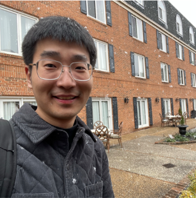

|
 |
Yi Liu Ph.D. Student
Department of Computer Science and Engineering
Email: yliu634 [at] ucsc [dot] edu |
Biography
I am a fourth-year PhD student at the University of California Santa Cruz, under the supervision of Prof. Chen Qian. I obtained my Bachelor's degree in Electronic Information Engineering from the University of Science and Technology of China (USTC) in 2020, where I was advised by Prof. Wei Gong. My research work mainly focuses on computer networking and systems. I interned at AWS in the summer of 2023.
Publications
Workshop/Poster Publications
Teaching Assistants
In UC Santa Cruz:
In USTC:
Last update: May, 2024.